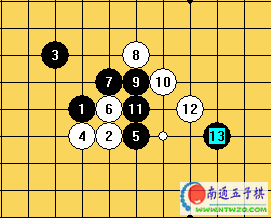

菜鸟读谱系列20061016
#1 菜鸟读谱系列20061016作者：有志青年 发表时间：2006-10-16 11:19:35
#2 Re:菜鸟读谱系列20061016作者：有志青年 发表时间：2006-10-16 11:53:35
我的皮厚口号“我是菜鸟，我怕谁！”
到今天为止，仅了解花月、蒲月、恒星、寒星开局，仅仅是了解，所以我读谱遇到的开局我只能用我现有水平去学习。说的不对的地方，请大大们指正哟。
1到5就不说了，那个5应该就是2打了吧，我猜想1打是不是4旁边那个点呢？白棋走这个6，可以将黑棋分割开来，同时自己形成两个2，这就是白棋走这个6的想法？摆在黑棋前面的两个2，是堵？还是先自己布局？堵的话先堵哪一个呢？
这个黑7先堵了纵向的2，自己也形成了一个2，同时和黑3是不是也做好了前期准备呢。白8没有先活三，呵呵，要是我的话，有三先活多舒服萨，这是菜鸟和高手的差距？黑9继续2堵白2

白10封堵黑9连2，白好像在外围，黑左边好像也不成气候，黑11卡在中间，是不是有破坏白棋气势的想法呢？同时自己也形成一个2和一个死三，要是我遇到此时情况，我心理总觉得刚刚形成的这个2好像危险很大，是不是需要先封堵一下呢？谱中，白棋先活三，黑棋封堵。
白棋14破除7、11那条2，同时也可以尝试左右相互联系起来吧，黑15正好冲四断联系，黑17继续断了白棋的联系，这个白棋18我走的话，呵呵，老话，先活三萨，谱中，白棋18还是属于做准备工作吧。
既然白18不先活三，那黑19就索性断了它的可能？19之后，黑棋好像场面是不是好看点，加上后来的黑21，黑棋一幅蓄势待发的局面萨。白20没有被黑19吓住〔我被吓住了〕，为冲四做了一个准备。黑21叫杀，我是白一定心慌了，还不堵吗？
到这里为止，好像双方对上了，就比谁的速度快了哟。读谱读了好几遍，大约第三遍的时候，看到这里才感到杀气腾腾。
白22开始到26的连续冲四，好霸气！白28看了实在是佩服，28活三，同时叫住黑棋的禁手，白棋始终保持优势，还将黑棋21点的四三叫杀给破掉了。黑棋31活三，同时四三叫杀，却恰恰被白棋冲四破解了，不得不佩服白棋从22开始的落子，白棋34轻轻一个落子将右边局势全部清理完毕。
黑棋在右边没有进攻的情况下，35点开始封堵，白36做了一个点，一子三通，黑37封堵，白38活三，就是这个38我得多看几遍，怎一个牛字了得，就是这个38，白胜了。

最后要看的就是白42点了，一子双杀
#3 Re:菜鸟读谱系列20061016作者：longfx 发表时间：2006-10-17 11:20:32
我也简单评一下吧.希望能有些小小帮助:)
开局名山通型二打,网络上对这个通型的必胜早有传闻,但是比较复杂,而且某些分支没有公布出来,所以实战还是可以下的.双方最强至第8手.
#4 Re:菜鸟读谱系列20061016作者：longfx 发表时间：2006-10-17 11:23:40
这个9是最强9.对于很多挂开开局来说,1-5-7,1-3-7,3-7-9这种三字关系非常重要.可以见水岚开局等等.实战中避开了最强9,优势来说减少了,局面更负责些.
#5 Re:菜鸟读谱系列20061016作者：longfx 发表时间：2006-10-17 11:37:10
白12是否先活三可以探讨一下.后面几手都很正常.18手感觉有些单薄,只做了一个二(后中手?).19手有几个防点,黑选择这个大概也是为了后面的反攻吧.不过这个19的弱点一下被白看出来,白20非常强硬.同样强硬的是黑21.22到28连续进攻,叫黑禁手,黑唯一解禁,无奈.#6 Re:菜鸟读谱系列20061016作者：longfx 发表时间：2006-10-17 11:41:14
不过24的应法是否这样最好,可以继续深入一下.
题外:本来以为24手下29位可以接近必胜,发现黑某处有唯一防,并反败为胜.惭愧惭愧.(不止骗过了我,也骗过了黑石的正负值,呵呵)
#7 Re:菜鸟读谱系列20061016作者：越狱行辕 发表时间：2008-9-9 16:06:21
图片看不到了［ 有志青年 于 2008-9-9 18:15:09 时奖励此帖[金币加 20 威望加1］